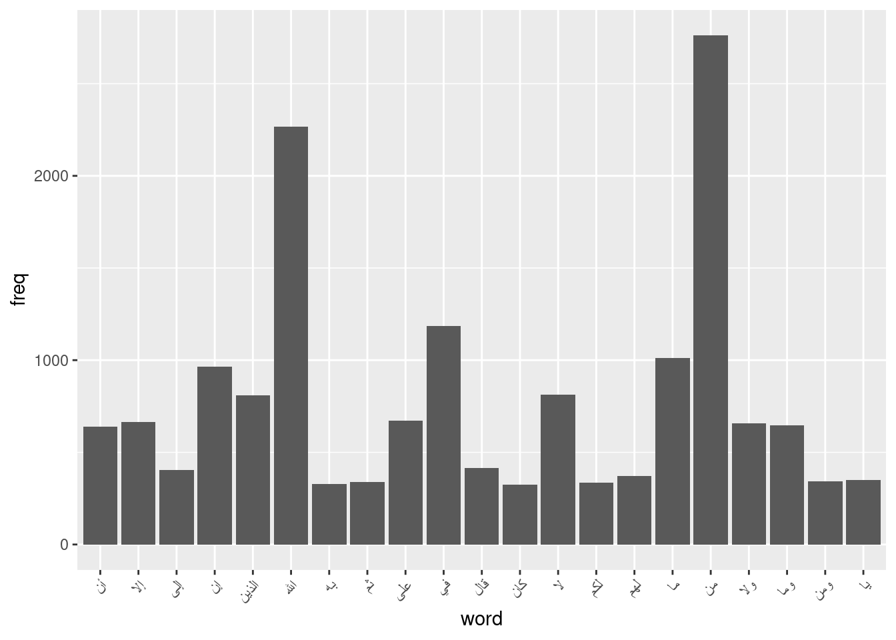
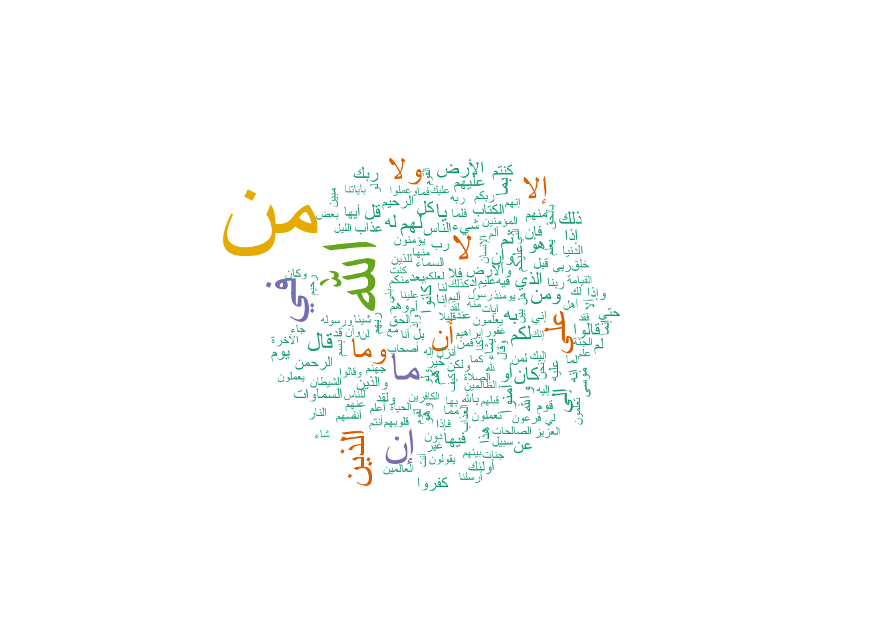
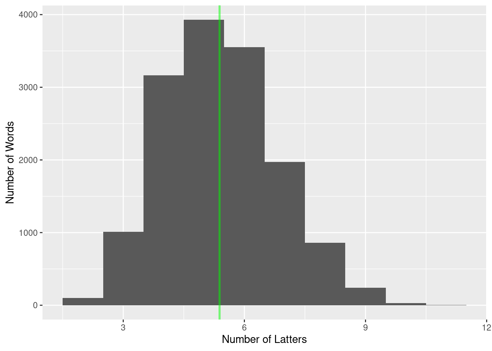

## 'data.frame': 6236 obs. of 3 variables:
## $ surat: int 1 1 1 1 1 1 1 2 2 2 ...
## $ ayat : int 1 2 3 4 5 6 7 1 2 3 ...
## $ text : chr "بسم الله الرحمن الرحيم" "الحمد لله رب العالمين" "الرحمن الرحيم" "مالك يوم الدين" ...## <<SimpleCorpus>>
## Metadata: corpus specific: 1, document level (indexed): 0
## Content: documents: 5
##
## [1] بسم الله الرحمن الرحيم الحمد لله رب العالمين الرحمن الرحيم
## [4] مالك يوم الدين إياك نعبد وإياك نستعين## <<DocumentTermMatrix (documents: 6236, terms: 14867)>>
## Non-/sparse entries: 73993/92636619
## Sparsity : 100%
## Maximal term length: 11
## Weighting : term frequency (tf)## <<DocumentTermMatrix (documents: 7, terms: 6)>>
## Non-/sparse entries: 0/42
## Sparsity : 100%
## Maximal term length: 6
## Weighting : term frequency (tf)
## Sample :
## Terms
## Docs وجه ولله اتخذ سبحانه قانتون ولدا
## 1 0 0 0 0 0 0
## 2 0 0 0 0 0 0
## 3 0 0 0 0 0 0
## 4 0 0 0 0 0 0
## 5 0 0 0 0 0 0
## 6 0 0 0 0 0 0
## 7 0 0 0 0 0 0## [1] "الرحمن" "الرحيم" "الله" "بسم" "رب" "لله"
## [7] "يوم" "الذين" "عليهم" "ولا" "الكتاب" "ذلك"
## [13] "فيه" "لا" "بما" "من" "هم" "والذين"
## [19] "وما" "أولئك" "ربهم" "على" "أم" "إن"
## [25] "كفروا" "لم" "عذاب" "الناس" "بالله" "ومن"
## [31] "آمنوا" "إلا" "في" "كانوا" "إنما" "الأرض"
## [37] "قالوا" "لهم" "وإذا" "ولكن" "إلى" "إنا"
## [43] "الذي" "فلما" "ما" "أو" "السماء" "والله"
## [49] "شيء" "كل" "ولو" "أيها" "ربكم" "يا"
## [55] "به" "فلا" "لكم" "كنتم" "مما" "وإن"
## [61] "النار" "فإن" "أن" "فيها" "قبل" "هذا"
## [67] "وهم" "الحق" "بعد" "ثم" "عليم" "هو"
## [73] "وهو" "إني" "ربك" "قال" "السماوات" "والأرض"
## [79] "إنه" "عليه" "عليكم" "عن" "موسى" "خير"
## [85] "عند" "قوم" "حتى" "قد" "منكم" "ولقد"
## [91] "كان" "منهم" "قل" "الدنيا" "بل" "يشاء"
## [97] "له" "ربنا" "إذ" "إذا"## من الله في ما إن لا الذين على إلا ولا
## 2763 2265 1185 1010 966 812 810 670 664 658wfplot = subset(wf, freq>300)
ggplot(wfplot, aes(word, freq)) +
geom_bar(stat = "identity") +
theme(axis.text.x = element_text(angle = 45, hjust = 1))


# letter = str_split(words,"")
# letter = sapply(letter, function(x) x[-1])
# letter = unlist(letter)
# letter = dist_tab(letter)
#
# letterMutate = mutate(letter, Letter = factor(letter$interval, levels=letter$interval[order(letter$freq)]))
# ggplot(letterMutate, aes(letterMutate$Latter, weight=percent)) +
# geom_bar()+
# coord_flip()+
# ylab("Proportion")+
# xlab("Letter")+
# scale_y_continuous(breaks=seq(0,12,2),
# label=function(x) paste0(x,"%"),
# expand = c(0,0), limits = c(0,12))